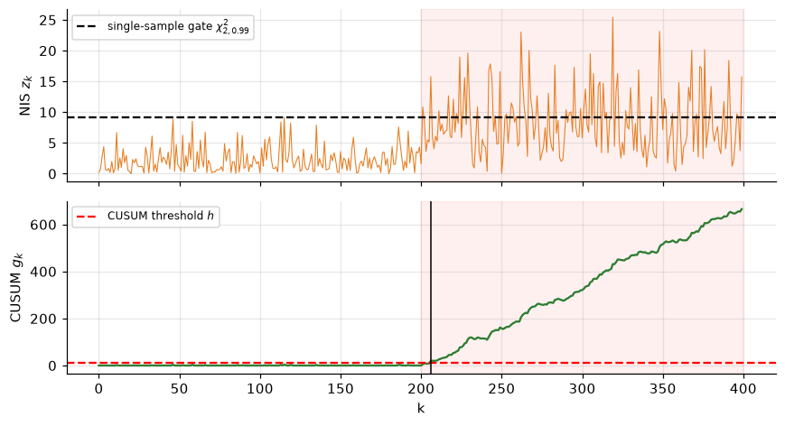
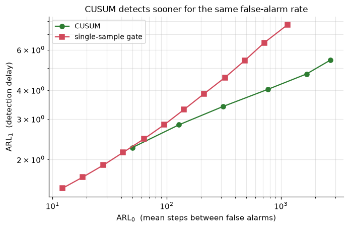

The course system is deliberately simple. This closing notebook develops two
techniques that directly strengthen it - sequential change detection and
conformal prediction - each with the theory and a runnable demo, and then lays
out a research roadmap for the pieces we only sketched.
This notebook imports courselib, the course's reference library. Download the full course to run it.
Part A - Sequential change detection (CUSUM)
The capstone (notebook 08) found that a single-sample gate on the NIS is
intermittent: under a bias the filter partly tracks, the NIS spikes cross the
threshold only ~30% of the time, so as a standalone trigger the gate is weak. The
fix is to accumulate evidence over time.
From the SPRT to CUSUM. Detecting a change from an in-control density p_0 to an
out-of-control p_1 as quickly as possible, subject to a false-alarm budget, is a
sequential-testing problem. Wald's sequential probability ratio test accumulates the
log-likelihood ratios_k=\log\frac{p_1(z_k)}{p_0(z_k)}; Page's CUSUM [1]
applies it with a reset at zero,
g_k=\max\!\big(0,\ g_{k-1}+s_k\big),\qquad \text{alarm when } g_k>h.
For detecting a mean increase this reduces to g_k=\max(0,\,g_{k-1}+z_k-k_{ref})
with reference k_{ref}\approx(\mu_0+\mu_1)/2: below the change the increments are
negative and g_k is pinned near 0 (few false alarms); after the change they turn
positive and g_k ramps up (fast detection). CUSUM is asymptotically optimal -
it minimises the worst-case expected detection delay for a given false-alarm rate
[3,4].
import numpy as np, matplotlib.pyplot as plt
rng = np.random.default_rng(0)
# NIS-like stream: in-control ~ chi^2_2 (mean 2), out-of-control ~ noncentral chi^2 (mean ~8)
ic = lambda size: rng.chisquare(2, size)
oc = lambda size: rng.noncentral_chisquare(2, 6.0, size)
zr = np.random.default_rng(3)
N, change = 400, 200
z = np.concatenate([zr.chisquare(2, change), zr.noncentral_chisquare(2, 6.0, N - change)])
kref, h = 5.0, 10.0
g = np.zeros(N)
for t in range(1, N):
g[t] = max(0.0, g[t-1] + z[t] - kref)
cusum_alarm = int(np.argmax(g > h)) if (g > h).any() else None
gate_alarm = change + int(np.argmax(z[change:] > 9.21)) if (z[change:] > 9.21).any() else None
fig, ax = plt.subplots(2, 1, figsize=(8, 4.4), sharex=True)
ax[0].plot(z, color="#e67e22", lw=.7); ax[0].axhline(9.21, ls="--", color="k", label="single-sample gate $\\chi^2_{2,0.99}$")
ax[0].axvspan(change, N, color="red", alpha=.06); ax[0].set_ylabel("NIS $z_k$"); ax[0].legend(loc="upper left", fontsize=8)
ax[1].plot(g, color="#2e7d32"); ax[1].axhline(h, ls="--", color="r", label="CUSUM threshold $h$")
if cusum_alarm: ax[1].axvline(cusum_alarm, color="k", lw=1)
ax[1].axvspan(change, N, color="red", alpha=.06); ax[1].set_ylabel("CUSUM $g_k$"); ax[1].set_xlabel("k")
ax[1].legend(loc="upper left", fontsize=8)
for a in ax: a.grid(alpha=.3)
plt.tight_layout(); plt.show()
print("change at k=%d : CUSUM detects at k=%s (delay %s) ; first single-sample gate crossing at k=%s"
% (change, cusum_alarm, cusum_alarm-change if cusum_alarm else None, gate_alarm))

change at k=200 : CUSUM detects at k=206 (delay 6) ; first single-sample gate crossing at k=201
The operating characteristic: ARL
Detector quality is summarised by the average run length (ARL): \mathrm{ARL}_0 is
the mean time between false alarms while in control (want it large), and
\mathrm{ARL}_1 is the mean detection delay once the change occurs (want it small)
[4]. Sweeping the threshold traces a trade-off curve. Below we compare CUSUM against
the memoryless single-sample gate on the same streams: for any given false-alarm
interval, CUSUM detects far sooner - which is exactly the robustness the capstone was
missing.
def arl(gen, kref, h, R=4000, maxT=4000):
g = np.zeros(R); rl = np.full(R, float(maxT)); fired = np.zeros(R, bool)
for t in range(1, maxT + 1):
g = np.maximum(0.0, g + gen(R) - kref)
nf = (~fired) & (g > h); rl[nf] = t; fired |= nf
if fired.all(): break
return rl.mean()
hs = np.arange(3, 15, 2)
cusum0 = np.array([arl(ic, kref, hh) for hh in hs]) # in-control -> false-alarm interval
cusum1 = np.array([arl(oc, kref, hh) for hh in hs]) # out-of-control -> detection delay
thr = np.linspace(5, 14, 12) # single-sample gate on z
Zic, Zoc = ic(400000), oc(400000)
gate0 = np.array([1/np.mean(Zic > t) for t in thr])
gate1 = np.array([1/np.mean(Zoc > t) for t in thr])
plt.figure(figsize=(6.4, 4.2))
plt.loglog(cusum0, cusum1, '-o', color="#2e7d32", label="CUSUM")
plt.loglog(gate0, gate1, '-s', color="#d1495b", label="single-sample gate")
plt.xlabel("$\\mathrm{ARL}_0$ (mean steps between false alarms)")
plt.ylabel("$\\mathrm{ARL}_1$ (detection delay)")
plt.title("CUSUM detects sooner for the same false-alarm rate")
plt.legend(); plt.grid(alpha=.3, which="both"); plt.tight_layout(); plt.show()

Part B - Conformal prediction
Ensembles (notebook 04) give a spread but no guarantee. Conformal prediction [5]
wraps any model to produce prediction sets with a finite-sample, distribution-free
coverage guarantee.
Split conformal. Hold out a calibration set of n points, compute nonconformity
scores R_i=|y_i-\hat f(x_i)|, and take q= the \lceil(n+1)(1-\alpha)\rceil-th
smallest. The interval \hat f(x)\pm q then satisfies, for an exchangeable test point,
Why it holds (sketch). Under exchangeability the rank of the test score R_{n+1}
among \{R_1,\dots,R_{n+1}\} is uniform on \{1,\dots,n+1\}, so
\mathbb P(R_{n+1}\le q)\ge \lceil(n+1)(1-\alpha)\rceil/(n+1)\ge 1-\alpha - no
distributional assumptions [6,7]. The catch is the exchangeability premise, which is
exactly what a distribution shift breaks - so a drop in realised coverage is itself an
out-of-distribution signal.
Keeping coverage under drift: adaptive conformal inference
If the world drifts, fixed conformal loses coverage. Adaptive conformal inference
(ACI) [8] restores it online with a tiny feedback rule on the miscoverage level:
which provably drives the long-run empirical coverage to 1-\alpha for any sequence,
even adversarial. Below, an input that drifts out of distribution collapses the
coverage of a fixed-level online predictor, while ACI holds it near the target.
T = 4000
xs = np.linspace(-2, 5, T) # input drifts out of the training domain
ys = f(xs) + rng.normal(0, noise, T)
scores = np.abs(ys - model(xs)) # nonconformity scores along the drift
def online(adaptive, gamma=0.02, warm=50):
at = alpha; covered = np.zeros(T, bool)
for t in range(T):
if t < warm:
covered[t] = True;
if adaptive: at = at + gamma*(alpha - 0)
continue
lvl = 1 - min(max(at, 0.0), 1.0) if adaptive else 1 - alpha
qt = np.quantile(scores[:t], lvl) # quantile of past scores at the (adapted) level
c = scores[t] <= qt; covered[t] = c
if adaptive: at = at + gamma*(alpha - (0.0 if c else 1.0))
return covered
run_cov = lambda c: np.cumsum(c)/np.arange(1, len(c)+1)
cov_fix, cov_aci = online(False), online(True)
plt.figure(figsize=(7.2, 3.4))
plt.plot(run_cov(cov_fix), color="#d1495b", label="fixed level")
plt.plot(run_cov(cov_aci), color="#2e7d32", label="adaptive (ACI)")
plt.axhline(1-alpha, ls="--", color="k", label="target %.2f" % (1-alpha))
plt.xlabel("time step (input drifting OOD ->)"); plt.ylabel("running coverage")
plt.title("ACI restores coverage under distribution shift"); plt.legend(loc="lower left"); plt.grid(alpha=.3)
plt.tight_layout(); plt.show()
print("long-run coverage fixed: %.2f ACI: %.2f (target %.2f)"
% (cov_fix[100:].mean(), cov_aci[100:].mean(), 1-alpha))
Where a serious version of this system would go, with the mathematics named and the
literature to start from.
1. Chance-constrained / stochastic MPC instead of LQR. Replace the regulator with
a predictive controller that keeps the lane with high probability,
\mathbb P(|e_y|\le e_{\max})\ge 1-\varepsilon over a horizon, propagating the
perception covariance \Sigma^{AI} into constraint tightening. This turns the
integrity signal into a rigorous safety margin rather than a speed heuristic [9].
2. Learned driver state. Replace the scalar workload W with an estimate from
gaze, reaction time, or steering entropy, so authority \lambda=\Phi(I,W) reflects the
real driver - the workload-adaptive-shared-control direction [notebook 07, ref 9].
3. Perception with built-in, calibrated uncertainty. Swap the synthetic sensor and
the ensemble for evidential or prior-network heads that output a distribution directly
[10,11], trained on real images (and a photoreal simulator such as CARLA), with the
NIS/ODD monitor wrapped around the real network.
4. Runtime assurance and formal guarantees. Frame the contracted-envelope mode as a
verified safety controller and switch to it under low integrity - a Simplex /
runtime-assurance architecture [12] - and certify the safe set with control barrier
functions or reachability [13], moving from a heuristic score toward an assured
envelope.
5. Integrity with a bound, not a score. Borrow the aviation notion of a
protection level: instead of I\in[0,1], compute a statistical bound on the state
error that holds with a target integrity risk, using the conformal or GLR machinery
above. This is the path from "monitor" to "safety case".
6. Higher-fidelity plant and closed-loop learning. A dynamic bicycle with tyre
slip and actuator lag (notebook 01), longitudinal control, and end-to-end evaluation
where the monitored perception feeds the controller in a realistic simulator.
You have finished the course
Across nine notebooks you built, from first principles, a small but complete
trustworthy-autonomy stack and the theory under each piece: a vehicle model and an
optimal controller; a camera model and a perception front-end with calibrated,
decomposed uncertainty; a Kalman monitor whose innovations are white and whose NIS is
chi-squared; an operational-design-domain check; a fused integrity score evaluated by
ROC and detection delay; and an integrity-aware shared controller whose authority
follows trust. The capstone showed, with a controlled and statistically-tested
experiment, that using AI perception through a monitoring layer is safer than
trusting it or switching away from it - and this notebook showed how to make each
piece rigorous. That is the core of trustworthy interactive autonomous driving.
Exercises
Derive the CUSUM increment z_k-k_{ref} from the Gaussian-mean log-likelihood ratio
and identify k_{ref} in terms of \mu_0,\mu_1,\sigma.
Add the CUSUM to courselib's integrity monitor (feed it the NIS) and re-run the
capstone ood_curve ablation with NIS-only. Does the cumulative test now hold
integrity down where the single-sample score could not?
Implement a normalized (self-starting) CUSUM that estimates \mu_0,\sigma online.
For conformal, use a normalized nonconformity score |y-\hat f(x)|/\hat\sigma(x)
with the ensemble's \hat\sigma and compare interval sharpness to the constant-width version.
References
E. S. Page. Continuous Inspection Schemes. Biometrika, 41(1/2):100-115, 1954. doi:10.2307/3001968
A. Wald. Sequential Analysis. Wiley, 1947. (Sequential probability ratio test.)
G. Lorden. Procedures for Reacting to a Change in Distribution. Annals of Mathematical Statistics, 42(6):1897-1908, 1971. doi:10.1214/aoms/1177693055
M. Basseville, I. V. Nikiforov. Detection of Abrupt Changes: Theory and Application. Prentice Hall, 1993.
V. Vovk, A. Gammerman, G. Shafer. Algorithmic Learning in a Random World. Springer, 2005.
J. Lei, M. G'Sell, A. Rinaldo, R. J. Tibshirani, L. Wasserman. Distribution-Free Predictive Inference for Regression. Journal of the American Statistical Association, 113(523):1094-1111, 2018. doi:10.1080/01621459.2017.1307116
A. N. Angelopoulos, S. Bates. A Gentle Introduction to Conformal Prediction and Distribution-Free Uncertainty Quantification. Foundations and Trends in ML, 2023. arXiv:2107.07511
I. Gibbs, E. Candes. Adaptive Conformal Inference Under Distribution Shift. NeurIPS, 2021. arXiv:2106.00170
A. Mesbah. Stochastic Model Predictive Control: An Overview and Perspectives for Future Research. IEEE Control Systems Magazine, 36(6):30-44, 2016. doi:10.1109/MCS.2016.2602087
A. Amini, W. Schwarting, A. Soleimany, D. Rus. Deep Evidential Regression. NeurIPS, 2020. arXiv:1910.02600
A. Malinin, M. Gales. Predictive Uncertainty Estimation via Prior Networks. NeurIPS, 2018. arXiv:1802.10501
L. Sha. Using Simplicity to Control Complexity. IEEE Software, 18(4):20-28, 2001. doi:10.1109/MS.2001.936213 (Simplex / runtime assurance.)
A. D. Ames, S. Coogan, M. Egerstedt, G. Notomista, K. Sreenath, P. Tabuada. Control Barrier Functions: Theory and Applications. European Control Conference, 2019. doi:10.23919/ECC.2019.8796030